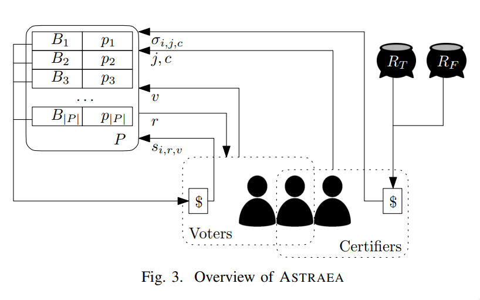

I still haven't found a good way to embed math
symbols into text. For now I'll leave the raw LaTeX code so that you
can tell what I mean.
A few months ago my supervisor's group (not including me, since I hadn't started yet) produced what was essentially the first decentralized blockchain oracle. They named it Astraea, after the Greek goddess of innocence. You can find the paper here. Shortly after its publication, someone by the name of Ryuuji Kamiya announced Shintaku, which is essentially an improved version of Astraea (complete with working smart contract code).
The main idea is to ask a question, and let anybody on a public blockchain answer it. We incentivize honest answers with incentive compatible rewards. That is, anyone who wants to participate is guaranteed that honest voting is the best strategy to maximize payoffs. Thus, if a few hundred people answer a question, and we know that they knew that honesty was literally the best policy, then we can feel very confident that the final output is trustworthy.
This article is a sort of "staging area" for information that will eventually get into the decentralized oracle page.
The following figure is stolen from the original paper. Comment:
I think everyone should put a figure like this in their papers. Every
moving part is summarized in one diagram, which makes reading the paper
easy and fruitful. It also ends up being a great way to quickly remind
yourself how something works.

On the left we have the proposition list. Each entry is a proposition (i.e. a yes/no question) and its associated bounty (i.e. a payment sent by that proposition's original submitter, used as the source of payments to voters).On the bottom we have the participants, the people who actually provide answers to questions. The participants can be voters or certifiers. As indiciated by the arrows to/from the proposition list, a voter $i$ receives a random proposition $r$, to which they submit their vote $v$ and a stake $s_{i,r,v}$. Certifiers are similar to voters, except that they do not receive a random proposition. Instead, they simply submit a stake $\sigma_{i,j,c}$ and a vote $c$ to a proposition of their choice ($j$).
There is two more major differences between voters and certifiers. First, there is a relatively small maximum stake for voters, whereas there is a relatively large minimum stake for certifiers. As shown by the dotted boxes, a participant may choose to be both a voter and a certifier. Secondly, voters are rewarded directly by the bounty sent by the proposition's submitter, whereas certifiers are rewarded from the reward pools (shown on the top right as a pot for true answers and a pot for false answers).
The purpose of sending a stake with every vote is to enable penalties. It is not enough to simply reward honesty more than any other strategy; bad behaviour should have a sub-zero reward. Otherwise, even though honest behaviour might be a more fast/efficient way to make money, a dishonest user could still make profits by acting lazily/maliciously.This is undesirable. Note that it is the penalties that are used to fill the reward pools.
Birefly, after voting is finished on a proposition, the majority answers from both voters and certifiers are compared. If they are the same, we can hand out rewards. Otherwise, we will not output any answer for that question (in some sense, a disagreement between voters and certifiers signals that the issue is contentious or that honest and dishonest voters were fighting over the answer). There are separate true and false reward pools for certifiers, which are filled if the majority vote was false or true (respectively).Separating the rewards by answer acts to fight against a lazy equilibrium, where everyone always votes true and trivially achieves maximum rewards (and no one wants to provide an honest "false" answer or else they'll get penalized).
I make no claim that I have fully or even correctly explained Astraea. As far as academic papers go, this one is well written and fairly easy to read, so I refer you there for the proper details.